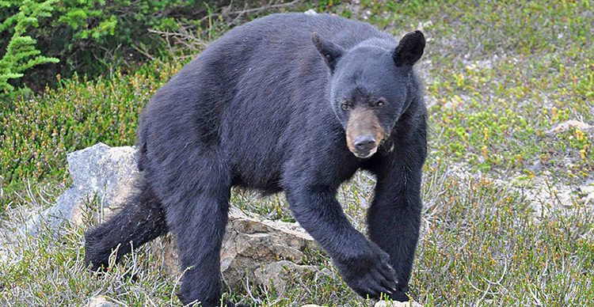
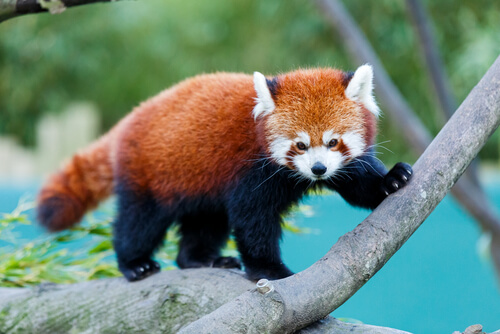
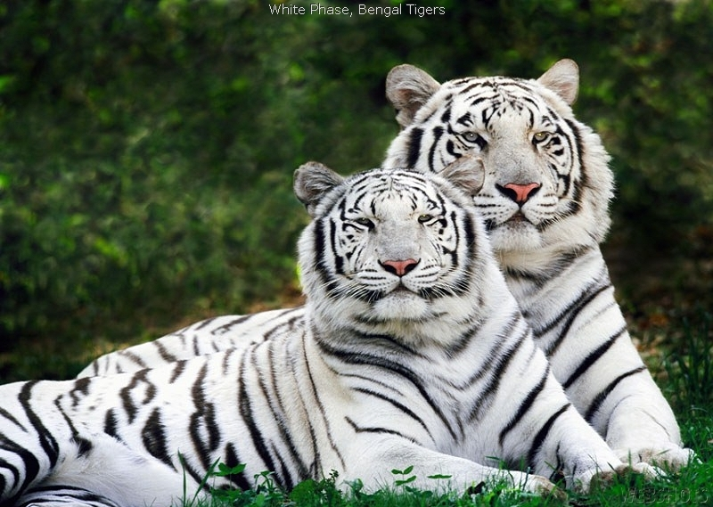

Pongo es un género de primates haplorrinos de la familia Hominidae conocidos
vulgarmente como orangutanes. Son nativos de Malasia e Indonesia.
La palabra orangután deriva del malayo Orang Hutan que significa hombre de la selva.

El oso tibetano (Ursus thibetanus), también llamado oso del Himalaya u oso negro
asiático es una especie de mamífero carnívoro de la familia de los úrsidos.
Es un oso que habita en los bosques de Asia (de Irán a Japón), preferentemente en
áreas montañosas.
Está estrechamente emparentado con el oso negro americano y en menor medida
con el oso pardo y el oso polar.

El panda rojo o panda menor (Ailurus fulgens) es una especie de mamífero
omnívoros de la familia Ailuridae, aunque se había clasificado dentro de las familias
de los prociónidos y de los úrsidos. Es la única especie del género Ailurus.
Se halla dentro de las especies en peligro de extinción.

Los tigres blancos son ejemplares de tigre (Panthera tigris) con una condición
genética que casi elimina el pigmento de su coloración normalmente anaranjada,
aunque las rayas negras no se ven afectadas. Esto ocurre cuando un tigre hereda
dos copias del gen recesivo para la coloración pálida: nariz rosa, ojos color azul hielo,
y piel de color blanca crema con rayas negras, grises o de color café claro.